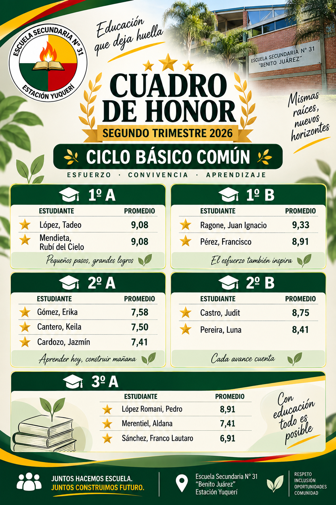
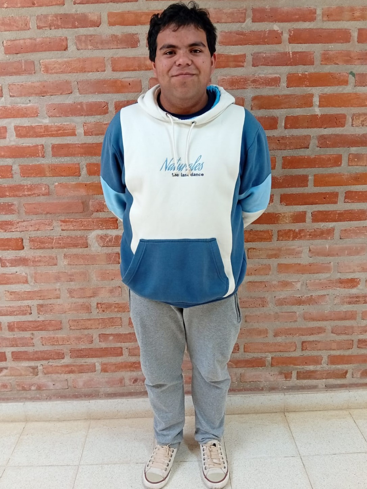
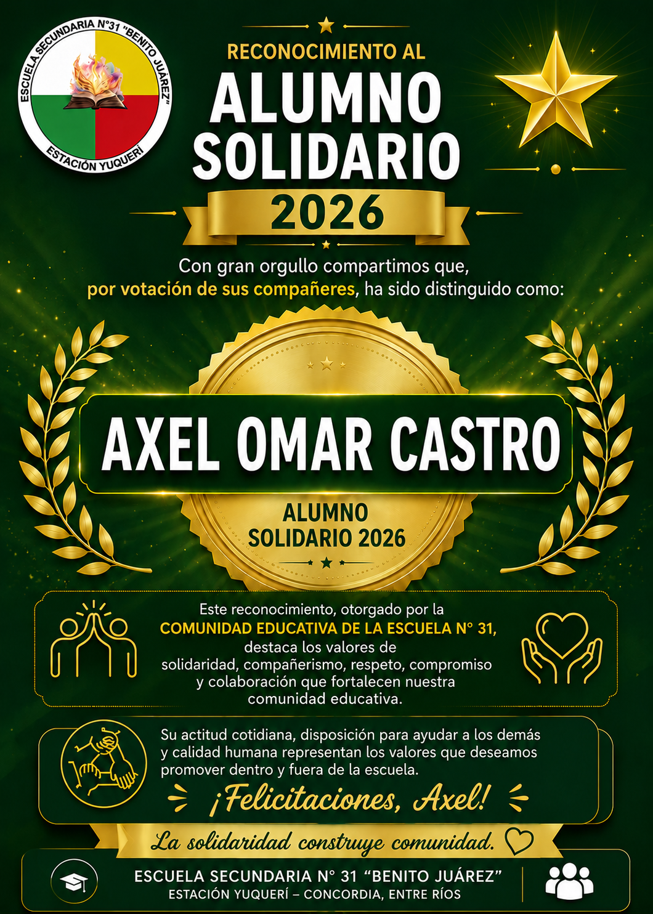
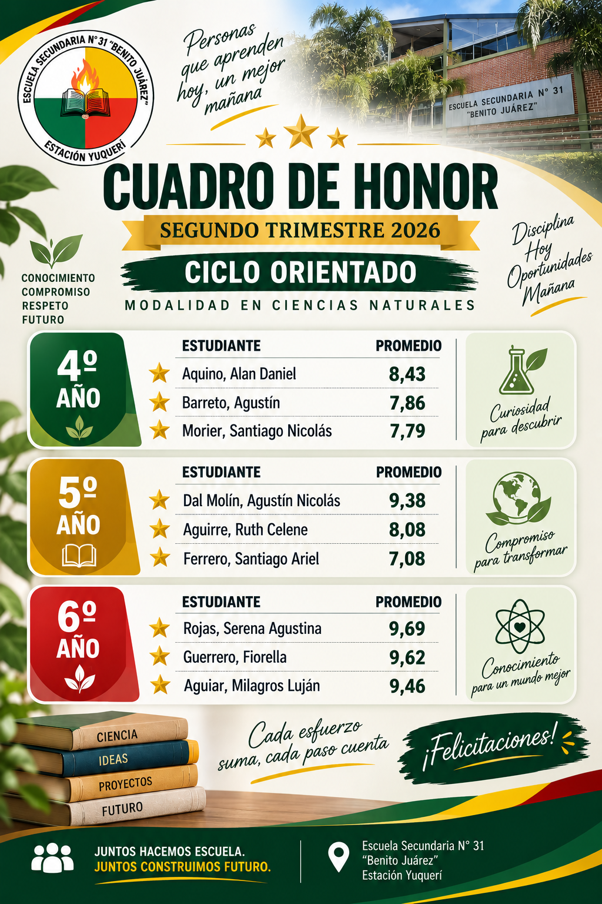
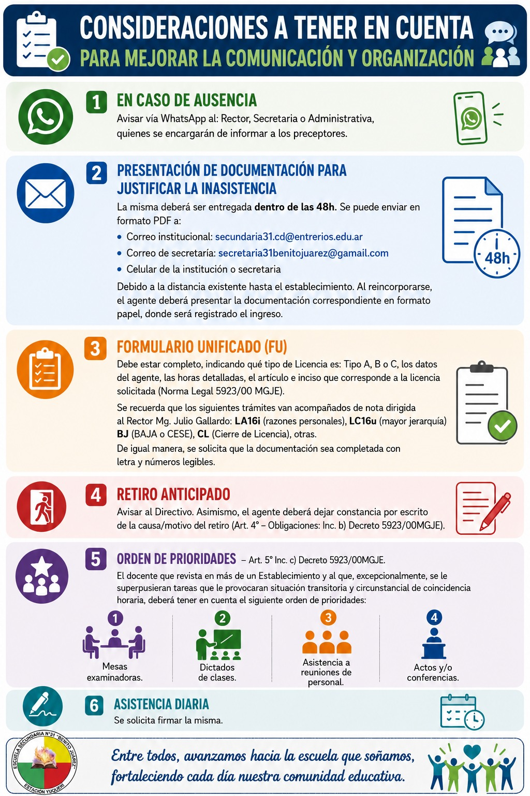
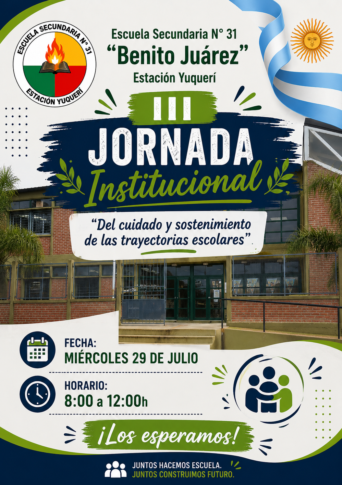

{kind=link}
{kind=link}
{kind=link}

Vida escolar
Identidad, participación y comunicación
Espacio destinado a compartir reconocimientos, participación estudiantil, comunicaciones institucionales y acontecimientos que forman parte de la vida cotidiana de nuestra comunidad educativa.
Reconocimientos
Distinciones que ponen en valor el compromiso, la solidaridad y el desempeño académico de nuestros estudiantes.
Reconocimiento institucional
Alumno Solidario 2026
Reconocimiento otorgado por votación de sus compañeros al estudiante que representa los valores de solidaridad, compañerismo, respeto y compromiso con la comunidad educativa.


Axel Omar Castro
Distinción que destaca la solidaridad, el compañerismo, el respeto, el compromiso y la colaboración como valores que fortalecen la comunidad educativa de Estación Yuquerí.
Ver reconocimiento
Reconocimiento académico
Cuadro de Honor Institucional
Estudiantes destacados por su desempeño académico durante el Primer Trimestre 2026.
{kind=link}

Ciclo Orientado – Ciencias Naturales
Abrir en tamaño completoPrimer Centro de Estudiantes
La conformación del primer Centro de Estudiantes de la Escuela Secundaria Nº 31 “Benito Juárez” representa un paso significativo para fortalecer la participación, la representación y la vida democrática institucional.
Estudiantes participantes
- Milagros Luján Aguiar
- Elías Alejandro Bottero Delgado
Estudiantes participantes
- Walter Lucas Emanuel Acosta
- Fabián Alves Dos Santos
Estudiante participante
- Aylén Daiana López
Estudiante participante
- Mía Michelle Duarte
Estudiantes participantes
- Celeste Micaela Giménez
- Isabel Ailén Cerrudo
Estudiante participante
- Juan Ignacio Ragone
Estudiante participante
- Érica Analuz Mesa
Participación estudiantil: La presencia de estudiantes de distintos cursos refleja el compromiso de la comunidad educativa con la vida democrática e institucional de la escuela, fortaleciendo los espacios de participación, representación y construcción colectiva.
Promo 2026
Un espacio para acompañar, reconocer y homenajear a los futuros egresados de la Escuela Secundaria Nº 31.

Futuros egresados
La huella que dejamos
Fotos, recuerdos, producciones, mensajes y momentos significativos de la promoción.
Ir al espacio Promo 2026Acuerdo Escolar de Convivencia 2026
Documento institucional aprobado que orienta la convivencia democrática, los derechos, las responsabilidades y los acuerdos construidos por la comunidad educativa.
Convivir también es aprender
El AEC establece pautas para el respeto, el diálogo, la resolución pacífica de conflictos, el uso responsable de dispositivos, el cuidado del patrimonio escolar y la participación de estudiantes y familias.
Consultar el documento aprobado
Podés leerlo en línea o descargarlo en formato PDF.
Para consultas institucionales sobre convivencia escolar: secretaria31benitojuarez@gmail.com
Comunicaciones institucionales
Información y convocatorias de interés para nuestra comunidad educativa.
{kind=link}

Avisos de Secretaría
Consideraciones para mejorar la comunicación y organización
Información importante sobre ausencias, documentación, licencias, retiros anticipados, orden de prioridades y asistencia diaria.
Ver flyer completo{kind=link}

Jornada institucional
Del cuidado y sostenimiento de las trayectorias escolares
Miércoles 29 de julio, de 8:00 a 12:00 h. Un espacio institucional de encuentro y trabajo compartido.
Ver flyer completo